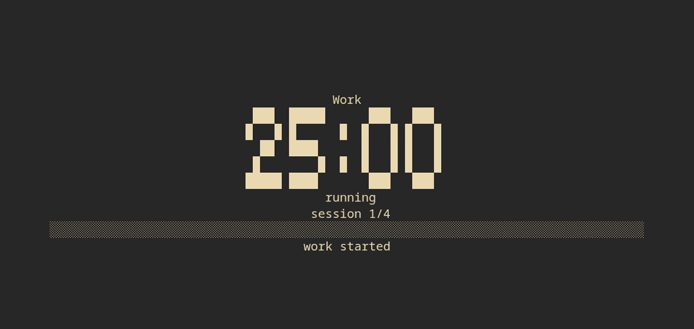
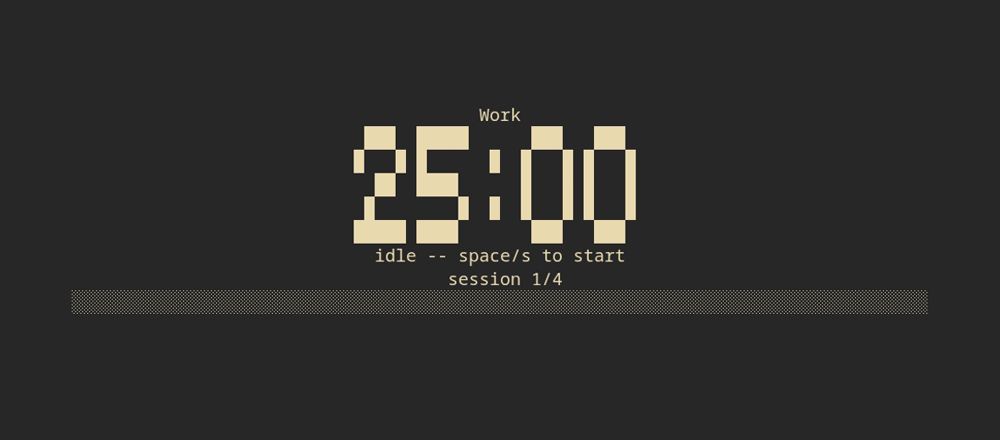
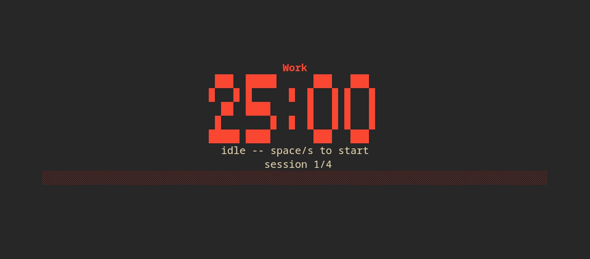
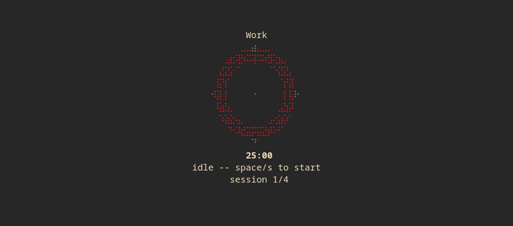
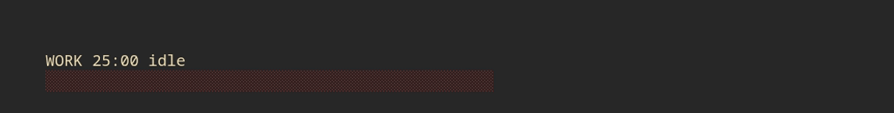

herdr-pomodoro.
A minimal, elegant, theme-adaptive Pomodoro timer for Herdr. Four moods, live presets, session history, and a setup wizard on first run -- all in a single ~900 KB binary with no background daemon.

01What it is
herdr-pomodoro is a Herdr plugin -- a Pomodoro timer that lives in a terminal pane instead of a separate app. It docks anywhere in your Herdr layout: a thin strip in a side drawer, a full widget pane, or a quick-glance popup. Everything is driven by simple keybindings and one small Rust binary; there's no GUI, no background process, and no dependency to install beyond Herdr itself.
It follows whatever Herdr theme you're running (gruvbox, dracula, catppuccin, nord, and the rest) automatically, because it draws with the standard ANSI palette instead of hardcoded colors -- the same mechanism any theme-aware terminal app uses. No plugin-side theme configuration needed.
02Features
$ Four moods
minimal, digital, analog, flashy. Static, text-only, no icons -- the pane auto-downgrades to a smaller mood when it doesn't have room, so it never clips in a narrow split.
$ Theme-adaptive
Colors are drawn with the standard ANSI palette, used sparingly.
Herdr's active theme remaps them automatically -- override with hex
values in config.toml if you want a fixed look.
$ Presets & shortcuts
classic (25/5/15), deep-work (50/10/20), quick (15/3/10), or your own. Global shortcuts and one-shot subcommands for start, pause, skip, reset, and cycling views.
$ Session history
Every completed work session appends a timestamp to a plain-text
log. Press i for rolling last-24h / 7-day / all-time
counts, or run it headlessly.
$ First-run setup wizard
Pick your view, preset, sound, and notifications with a live preview, right in the pane -- shown once via a startup hook, redo it any time.
$ No daemon
Timer truth is a wall-clock end-timestamp in a state file. Nothing runs in the background while the pane is closed, and the countdown stays accurate regardless.
03Screenshots
The same binary, four different personalities. Pick one as your
default in config.toml, or cycle through them with
m.




A live session, and the two overlays
(? for help, i for history) that work on top
of any mood.
04Install
From the marketplace, once published:
herdr plugin install sazardev/herdr-pomodoroOr for local development, clone it, build it, and link it:
git clone https://github.com/sazardev/herdr-pomodoro
cd herdr-pomodoro
cargo build --release
herdr plugin link .Open the pane. A setup wizard walks you through your defaults the first time.
herdr plugin action invoke open --plugin sazardev.pomodoro
# or just: prefix+alt+pDefault shortcuts, once installed:
| shortcut | action |
|---|---|
| prefix+alt+p | Open / focus the pane |
| prefix+alt+s | Start / pause |
| prefix+alt+n | Skip to next phase |
| prefix+alt+r | Reset current phase |
| prefix+alt+m | Cycle view |
In-pane keys, once the pane is focused:
| key | action |
|---|---|
| space / s | Start, pause, resume |
| n | Skip to next phase |
| r / R | Reset phase / full reset |
| m | Cycle view |
| p | Cycle preset |
| i | Toggle history |
| ? | Toggle help |
| q / esc | Close |
05Versioning
herdr-pomodoro follows Semantic
Versioning. Cargo.toml's [package] version
is the single source of truth, kept in lockstep with
herdr-plugin.toml; the binary reports it back with
herdr-pomodoro --version. Full history in
CHANGELOG.md.
- Four static, text-only moods with auto-downgrade for small panes
- Classic / deep-work / quick presets, plus custom presets
- Theme-adaptive rendering via the standard ANSI palette
- Global shortcuts and one-shot subcommands
- Desktop notifications and terminal bell on phase completion
- No-daemon design: timer truth is a wall-clock end-timestamp
- Analog progress ring with rim ticks and a position marker
- Toasts (started / paused / resumed / phase-complete) in every mood
- First-run setup wizard with a live preview per view
- Work-session history with a rolling stats overlay